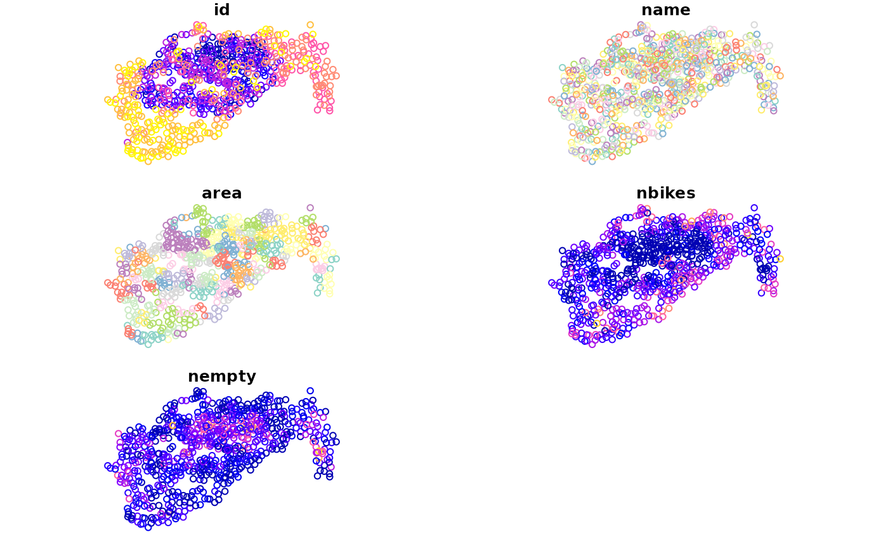

Points representing cycle hire points accross London.
Format
FORMAT:
id: Id of the hire point
name: Name of the point
area: Area they are in
nbikes: The number of bikes currently parked there
nempty: The number of empty places
geometry: sfc_POINT
Examples
if (requireNamespace("sf", quietly = TRUE)) {
library(sf)
data(cycle_hire)
# or
cycle_hire <- st_read(system.file("shapes/cycle_hire.geojson", package="spData"))
plot(cycle_hire)
}
#> Reading layer `cycle_hire' from data source
#> `/home/runner/work/_temp/Library/spData/shapes/cycle_hire.geojson'
#> using driver `GeoJSON'
#> Simple feature collection with 742 features and 5 fields
#> Geometry type: POINT
#> Dimension: XY
#> Bounding box: xmin: -0.2367699 ymin: 51.45475 xmax: -0.002275 ymax: 51.54214
#> Geodetic CRS: WGS 84

if (FALSE) { # \dontrun{
# Download the data
cycle_hire = readr::read_csv("http://cyclehireapp.com/cyclehirelive/cyclehire.csv",
col_names = FALSE, skip = TRUE)
cycle_hire = cycle_hire[c_names]
c_names = c("id", "name", "area", "lat", "lon", "nbikes", "nempty")
cycle_hire = st_sf(cycle_hire, st_multipoint(c_names[c("lon", "lat")]))
} # }